Habitat factors and measurement of
Abiotic factors.
fig10.1:
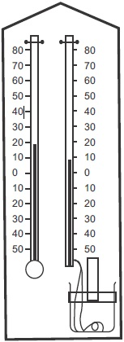
fig10.2:
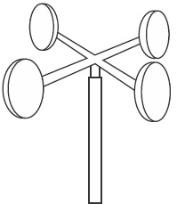
fig10.3:
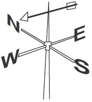
fig10.4:
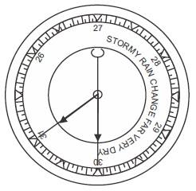
fig10.5:
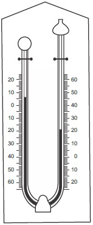
fig10.6:
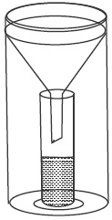
Background information
Ecology is the study of living things in relation to their environment.
Basic ecological concepts needed for an understanding of practical ecology
include:
Environment: All factors in the surrounding of an organism that effects
it.Examples: where it lives, diseases that affect it, animals that prey on it, the
food it takes etc.
Habitat : The place where an organism lives naturally. Under habitat we have
terresterial and aquatic habitats. Terresterial habitat includes ground habitat,
aboreal habitat and underground habitat while aquatic habitats include marine
habitats, fresh water habitats and brackish water habitats (estuarine habitat).
Biosphere:This is the part of the earth (atmosphere hydrosphere and
lithosphere) where life can be sustained.
Ecological niche: The place an organism lives and what it does there ie.
An organism occupation where it lives.
Population: All organisms of the same kind (specie) living together in the
same habitat.
Community: All population of living things that exist together in a habitat.
Ecosystem: A unit of the biosphere in which the community of organisms
interact with the physical or non living part of the environment. It consist of
biotic (living) components and abiotic (non living components).
Biomes: Large natural terrestrial ecosystems. Biomes can be indentified by its
vegetation hence vegetation form the bulk of the community in an ecosystem
Local Biomes
Biomes
Location
Climatic conditions
Type of plants / animals found there
1. Mangove
swamps (soft
and swampy
biome)
In the tropics
along coastal
region and river
mouths : Delta
state, Rivers
and Cross river
states.
Hotand wet
through outthe
year, 2500mm
annual rainfall,
average monthly
temperature of 26°c
foralmostall
months ofthe year.
Evergreen, broad
leaved trees. The
presence of prop roots
and breading roots
enables them to grow
well undersofi
swampy conditions.
2.
Tropical rain
forest (many
rain forest
have been
cleared for
industrial,
agricultural or
residential
purpose}.
Regions bfw
equator and
latitude 5-10° N
and S. parts of
Oyo, Edo, Delta,
lmo, Cross river,
Ogun, Ondo and
Rivers states.
Hotand wet, mean
annual temp is 27°C
mean annual
rain fall is 2000mm.
The forest is dense
with many and different
broad leaved trees
thatare mostly ever
green. Trees form three
layers. While thetops
form a thick canopy
that prevents light from
reaching the forest
floor. Epiphytic plants,
woody climbers (lianas)
are commonly found.
3. Savannas
Form a broad
belt up to 1000km
wide to the north,
east and south
ofthetropical
rain forest 0fW.
Africa and the
zaire basin.
Hot wet seasons
alternate with cold
dry season. Mean
monthlytemp. ls
29°C at hot
condition and 18°c
in cold season.
Total annual rain fall
(mostly may to oct.)
varies from around
500mm in semi
desertfringes to
1500 mm in region
bordering the rain
forest.
Perennial grasses
with clumps of
trees,shrubs and few
trees
Gumea
Savanna:
Parts of kaduna,
kwara, Benue
Annual rainfall of
above 600mm.
long dry season.
Dominated by grass
vegetation, scattered
trees and shrubs.
Sudan
Savanna:
Kano, Borno
Drier than the
rest.
Shorter grasses, fewer
trees.
Sahel
Savanna:
Sokoto, Niger
Gongola, Bauchi
around lake chad
Rainfall is variabie
The zone is arid.
Trees, up to 10mm tall,
having small leaves
and thorns.
Major Biomes of the World
Biome type
Characteristics of
Climate
1. Tropical rain
forests
Dense forest,
different tree types.
growth of epiphytes, and
tree climbers.
Aboundant rainfall. mean
temperature of 27°c
through out the year.
2. Temperate
forests
Broad leaved deciduous
trees (trees that shed
their leaves during
winter) less dense forest
when compared to the
tropical rain forest: sunlight
penetration enablethe
growth of plants at many
levels from the floor.
Moderately wetwith dry or
cold season.
3. Coniferous
forest
Forest ofnedd|e- leaved
evergreen conifers e.g.
pines, firs and spruces.
Two layer offorest: upper
storey-dense layer of tall
trees.
Lowerlayer:-shrubs,
fern, moses, few types of
trees are found, the forest
floor is ooverd with thick
layer of conifer needles
due to slow decomposition
in low temperature
conditions.
Cold climate with Iight rain
fall and snow.
4. Temperate
shrubland
Drought resistant shrub,
aromatic plants and dwarf
trees which are often fire
resistant.
Temperate climate with
low temperature, summer
is hotand dry, winteris
mild and rainy.
5. Savanna
Tropical grass lands often
with scanty trees.
lnfertile soil
Climate is moderately dry
with cold winter and dry
summer.
6. Temperate
grassland
Perennial grasses growing
on fertile soil in large
stretches, vegetation
supports grazing of
animals.
Moderately dry climate with
cold winter and hot
summer.
7. Desert
Vegetation is sparse,
succulent perennials with
deep root system, annuals
which complete their
reproduction during the
brief rainy period.
Tropical temperature and
actic- alpine region with less
than 250mm ofannual rain
fall.
8. Tundra
Treeless marshy
vegetation. dwarfshrubs,
grasses,|ichen and most
very few plants types.
Cold climate (actic region)
long icy winter and very
short summers mean temp
erature of 10°c.
9. Mountain
vegetation
Evergreen rain forest at
mountain s|opes.Afr0-alpine
vegation at above
300mm on mountain.
There are grasses
neathsand sedges
General Questions
1. All factors found in the surrounding of an organisms which affect it is called
2. Write four example of the hydrosphere.
(i) Savanna (ii) Mountain (iii) Desert (iv) Tress
(i) River (ii) Lake (iii) Ocen (iv) Stream
(i) Anthill (ii) Forest (iii) Hole (iv) Trees
3. The lithosphere, the atomosphere and the hydrosphere make up the
4. Listed below are various living things, write within the table that follows, each of the organisms that fit in to a particular habitat
10. All individuals of one species which live in one area make up a
11. The most important factor that determines the distribution of forest and savanna is
Give two example each of the following:
12. Abiotic ecological factors (I)
(i) Vegetble (ii) Population
(i) Grassland (ii) Forest
(i) Rainfall (ii) Sunlight
13. Edaphic ecological factors
(i) Soil Texture (ii) Soil pH
(i) Temperature (ii) Rainfall
(i) Mountain (ii) Valley
14. Topographic (physiographic) factors
(i) Hills (ii) Vallys
(i) Temperature (ii) Rainfall
(i) Lake (ii) Ocean
15. Write four factors that affect soil ability to retain water
Teacher's attention required
16.
can be used to measure elavation
17. In population studies a collection of identified plants constitute what is called
18. Temperature, Rainfall, light, PH value, salinity and wind are all factor common to all habitats except
19. What instrument can we use to measure turbidity in a given aquatic habitat
20. A soil indicator is used to measure
Soil colour
Soil quality and conditions
Amount of humus
1a. Define the term hydrosphere.
The part of the biosphere occupied by air
The part of the biosphere occupied by water
The part of the statosphere ocupied by air
b. Give three examples of the hydrosphere.
(i) Lake (ii) Stream (iii) Ocean
(i) Mountain (ii) Valley (iii) Hill
(i) Temperature (ii) Sunlight (iii) Anthill
c. Name five local biotic communities in Nigeria. Associate each type with a particular state in Nigeria
Tabulate your answers as shown below.
Teacher's attention required
Local biotic communities
States in Nigeria where they are found
1
2
3
4
5
d. List three factors that affect organisms in marine habitat
Temperature; wind; Topography
Salinity; Oxygen; Concentration; Tidal movement
Trees; Rocks; Soil Texture
June 99 SSCE type question
2a. Name the common abiotic factors that only operate in a terrestrial habitat.
Teacher's attention required
b. Explain the difference between a biome and a habitat
Teacher's attention required
Biome
Habitat
1
Expression Exercises
1a. Define the following:
Ecological niche
b. Lithosphere:
c. Biome :
2. Describe the characteristics of one named biome in Nigeria or west Africa.
Teacher's attention required
3. Identify each of the following measuring instruments in Fig 10.1 - Fig 10.6 and write their uses in measuring ecological factors. Write your
Teacher's attention required
answer in the table below.
Measuring Instruments
Uses in measuring Ecological Factor.
i
ii
iii
iv
v
vi
vii
4. Identify the instrument below and its use in population studies.
Teacher's attention required
Write your answer in the table under.
fig10.7:
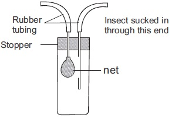
No
Names of instrument
Use in population studies
1
5a. write the five characteristic features of a population.
Teacher's attention required
b. Draw the diagram of a permanent quadrat.
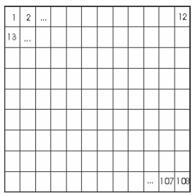
c. Describe how you can determine the population density of a named species or a named species of organisms using the quadrat method
Teacher's attention required
Practical Activities
1. Carry out an ecological survey of certain habitats both of terrestrial and aquatic habitats. Such as pond wafer stagnant water, rottlng
log of wood, marine water, grass land, frees, stream, an uncompleled building that looks deserted for a long tlme, underground holes,
school farm land, dumplng refuse etc. complete the table under by filling in, as accurate as possible the habitat of which each of these
organisms can be found.
1
Tad pole
2
Tilapia fish
3
House fly
4
Grass shopper
5
Rhizopus
6
Mosses
7
Mushroom
8
Spirogyra
9
Monkey
The table below shows the mean monthly rainfall ofa particular town in Nigeria. Use the figure to answer the questions that follow
Months
Months rainfall (in mm) in the town
January
4.27
February
21.80
March
80.30
April
144.61
May
163.70
June
163.70
July
155.14
August
129.24
September
178.87
October
157.33
November
28.46
December
9.52
a. using this figure in tabulation draw a histogram showing the average monthly rainfall distribution of the town (draw inside your
biology practical note book).
b. Draw the diagram of the likely instrument used to measure this ecological factor in your biology practical note book.
c. Explain how the instrument is used in the same note book.
Comparing the water retaining capacity and porosity of different soil samples.
‘Apparatus and materials needed’
1. Three filter funnels, filter papers or cotton wool, 3 measuring cylinders (100cm ), sandy soil, loamy soil and clay soil.
Procedure
Take equal amount of the different soil samples and place each sample in a filter funnel which has been plugged with cotton wool
or filter paper.
Stand or insert each funnel within the neck of a 100cm3 measuring cylinders.
Pour equal quantities of water (for instance 5 cm3 ) each into each of the funnel at the same time.
4. Note the time taken for the same volume of water e.g.5cm3 to be collected in each cylinder. Using a stop clock.
note the fastest and the one that follows and the slowest. This gives the porosity of the soil samples.
Now allow the water pour into the funnel to drain completely. When no water drips through, note the volume of water in each
cylinder. This gives the water retaining capacity of the soils samples.
Tabulate your result as shown belows
Types of soil
Volume of water retained in each soil sample
Volume of water in each cylinder at the end
Samples
Sandy soil
Loamy soil
Clayey soil
What conclusion can you draw from your experiment concerning the water retaining capacity of the different soil samples.
5(a). Fig 10.9 are diagrams showing the experimental set up of apparatus used in soil experiments. Identify and write alphabetically in the
table, provided the experimental set up that is for each experiment written in the table.
Soil experiment
Experiment diagram that identifies it
i
Comparing water retaining capacityof soil samples
ii
To determine the percntage of water
iii
To find the types and amounts soil in a particular sample of soil
fig10.9: Experiment A
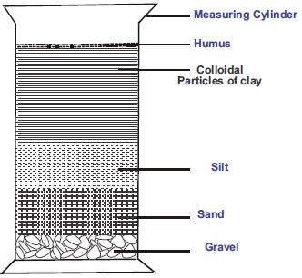
fig10.9: Experiment C
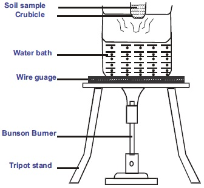
5(b). label the parts in experiment A B C
( c). Write down the components of a fertile soil
(d) Which of the two soils in experiment B has a higher water retaining capacity
fig10.9: Experiment B
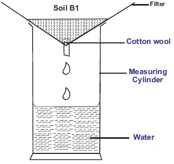
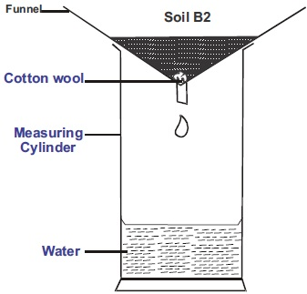
SSCE BIOLOGY PRACTICAL QUESTIONS(Ecology)
Teacher's attention required
June 1998
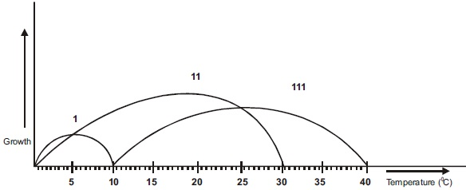
8. The graph above shows the limit of tolerance of some species of fish 1, ll, and lll to water
temperature
From the graphs, what can you deduce about the geographical range of species (l) and
(lll)
What is the optimal temperature for growth of species (l) and (lll).
Name four abiotic factors which plants growing close to each other may compete for
(SSCE 1993 Biology practical)
State three principles, on which the use of the quadrat for determining population density is based
8. Use the diagram to answer the question below (June 97 SSCE practical) (note diagram changed)
Identify the organism represented in the diagram. List three features that adapt the organism to its
environment.
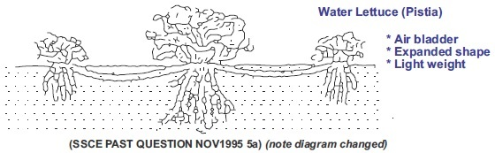
(SSCE PAST QUESTION NOV1995 5a) (note diagram changed)
5. The diagram below (here) is a typical scene in a
farmland. Study it carefully and use it to answer
Question (a)
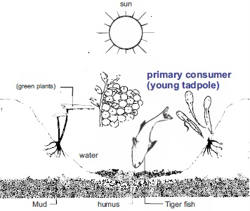
a) Explain why the farmland represented above could
be called an ecosystem